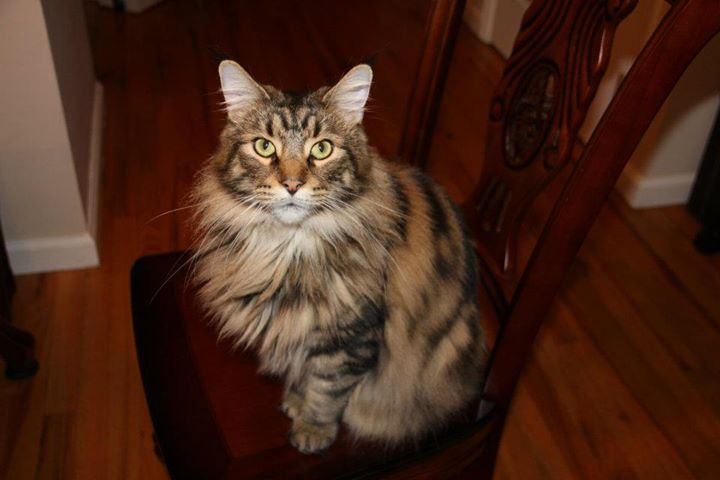

Create a link to the pet see a page with their names, breed, age, gender and their favorite toys
The shelter page should also have links to the pets' pages (to the same pages above)
We've made blank files with a suggested structure.
Pushok Profile

Pushok
Breed: Maine Coon
Age: 4
Gender: Male
Favorite toys: Missy
Back to HappiTails Client page